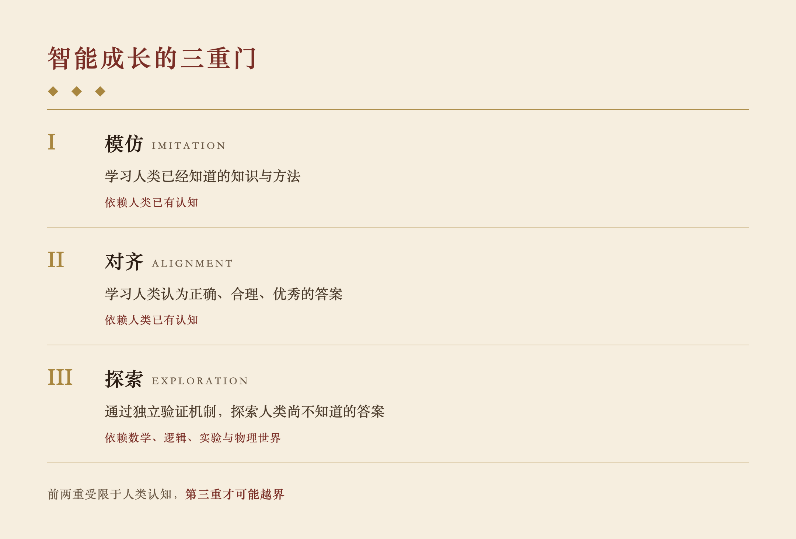

我一直有一个猜想。
早期 OpenAI 的模型明显领先于 Claude，但后来 Claude 很快追了上来，尤其是在 Coding 领域。
我怀疑，这背后的原因不只是模型架构、训练数据或算力，而是强化学习的方向不同。
Coding 是一个特别适合强化学习的领域。
因为代码对不对，可以运行；数学对不对，可以计算；定理对不对，可以证明。
这些领域有一个共同的特点：正确与否，不需要由人类的主观判断来决定。
这件事看起来很简单，但我觉得它可能是超级智能产生的关键。
◆
传统的模型训练，很大程度上是在模仿人类。即使进入 Post-training，通过人类偏好进行对齐，本质上仍然是在学习人类认为正确、合理、优秀的答案。
这有一个潜在的问题。
如果一个模型提出了一个全新的想法，而这个想法超出了人类已有的经验，甚至人类根本无法理解，那么人类应该如何评价它？
很可能，这个想法不会得到奖励。
因为它不符合我们已经知道的知识，不符合我们的经验，甚至不符合我们的直觉。
于是，模型就学会了给出人类认可的答案，而不是探索人类尚不知道的答案。
这并不是说对齐没有价值，而是说，如果人类偏好成为最终的奖励标准，模型的探索就可能受到人类已有认知的限制。
但 Coding、数学和科学实验不同。
一个 AI 可以提出人类从未想到过的算法，尝试一种完全不同的证明方法，甚至提出违反现有直觉的物理假说。
只要它能够通过验证，就不需要事先得到人类的认可。
这意味着，它可以真正开始 Explore。

◆
我觉得这里有三个不同的阶段。
第一个阶段是 Imitation，模仿人类已经知道的知识与方法。
第二个阶段是 Alignment，学习人类认为好的答案。
第三个阶段是 Exploration，通过独立的验证机制，探索人类尚不知道的答案。
前两个阶段都依赖人类已有的认知，而第三个阶段开始有机会摆脱这种限制。
当然，它仍然受到验证方法的约束。但这种约束来自数学、逻辑、实验和物理世界，而不只是人类的经验与偏好。
◆
回头看，我们已经见到的一些 AI 超越人类的例子，似乎也符合这个规律。
围棋有胜负，数学有证明，代码可以执行，工程设计可以测试性能，物理假说可以通过实验验证。
它们并不是没有人类参与，而是存在一种独立于人类主观认同的反馈机制。
AlphaGo 可以下出人类棋手最初无法理解的棋，因为它不需要说服人类那一步棋是好的。它只需要最终赢棋。
这就是模仿与探索的区别。
模仿需要知道过去什么是对的，而探索只需要有办法判断新的尝试是不是对的。
◆
当然，不是所有能验证的领域都一样容易训练。
数学证明一旦形式化，检查可能很快；代码可以反复运行；机器人需要真实的物理交互；科学实验则可能需要很长时间。
所以，决定 AI 能否持续探索的，不仅是有没有验证机制，还有验证的成本、速度，以及能否反复试错。
这也许可以解释，为什么 AI 在不同领域超越人类的速度会有很大的差异。
◆
我甚至怀疑，超级智能的产生，未必首先来自一个更大的模型，而是来自一种新的训练方式。
模型能够不断提出假设，不断尝试，不断通过外部世界验证自己的判断，并从成功和失败中继续学习。
人类不必预先知道答案。
更重要的是，人类也不必预先认同答案。
当然，这并不意味着只要有验证器就一定能产生超级智能，也不能仅凭这个猜想解释 OpenAI 和 Claude 的能力变化。它只是指出了一种可能突破人类经验边界的机制。
如果这个猜想成立，那么超级智能的关键，也许并不是 AI 学会了人类所有的知识，而是它终于获得了一种不必依赖人类既有知识、也能继续发现新知识的能力。
模仿让智能从人类开始。
而探索，才可能让智能超越人类。